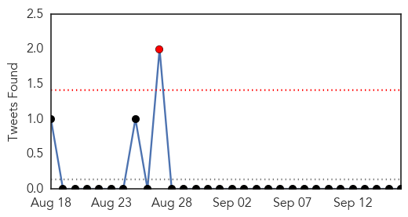

30 Day Trends
Web: 4 alerts, 0 warnings
Twitter: 0 alerts, 0 warnings
Top Articles:
- 0.998
- Hygiene best defense as virus spreads
- 0.994
- Enterovirus D68 not found in Morgan County hospitals
- 0.970
- Women & Children’s Hospital opens overflow unit to handle high number of children with respiratory illness
- 0.964
- MDA Offers Flu Shots to Those Affected by Muscle Disease
- 0.959
- Vaccine clinics gearing up for flu season
- 0.936
- Vaccinations to be required for students and toddlers
- 0.515
- InDevR Wins Barda Contract for Cutting-Edge Influenza Diagnostic
Top Tweets:
- 0.598
- Is the influenza vaccine safe for cystic fibrosis patients? http://t.co/vYsH8sWak2 via flu
Web/News Articles

Tweets
Article Locations

Article Confidences